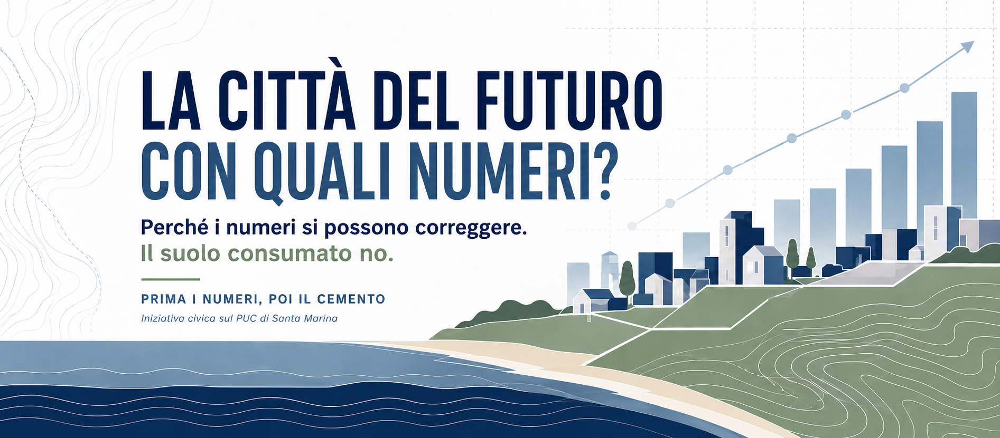

1. Case private
54 nuovi alloggi in 12 aree. Solo 33 delle 1.097 abitazioni non occupate nel 2011 sono considerate recuperabili.
Domanda: dov'è l'inventario che giustifica il 3%?

Guida civica al PUC di Santa Marina
Il PUC decide dove e quanto si potrà costruire nei prossimi anni: case, edilizia sociale, strutture turistiche, attività e servizi. Questa guida chiede di capire, prima delle decisioni irreversibili, quali numeri siano stati usati e se il territorio possa sostenerli.
Queste verifiche non sono un capriccio del cittadino. Il PTCP della Provincia, le norme dello stesso PUC e la disciplina della VAS stabiliscono criteri per calcolare i fabbisogni, considerare il patrimonio esistente, valutare gli effetti ambientali, confrontare alternative e monitorare i risultati.
Le osservazioni chiedono di mostrare in modo pubblico e comprensibile come tali regole siano state applicate.
54 nuovi alloggi in 12 aree. Solo 33 delle 1.097 abitazioni non occupate nel 2011 sono considerate recuperabili.
Domanda: dov'è l'inventario che giustifica il 3%?
36 alloggi ERP in 4 aree su terreni indicati come da acquisire.
Domanda: quante famiglie ne hanno bisogno e quali alternative esistono?
21 ambiti turistici, senza un limite chiaro di posti letto per ogni area.
Domanda: qual è il tetto complessivo e quali reti lo sostengono?
Nella VAS compaiono Aquara, Felitto e la Riserva del Calore; diversi indicatori risultano non calcolati.
Domanda: dati e giudizi sono realmente riferiti a Santa Marina e al Bussento?
Osservazione 1
Prima di aprire nuove aree edificabili, bisogna sapere quante case servono davvero e quante possono essere recuperate.
54
Nuovi alloggi
12
Ambiti AT/rcu
1.097
Abitazioni non occupate
33
Considerate recuperabili
Il PUC localizza 54 nuovi alloggi privati in dodici aree di trasformazione e considera recuperabili solo 33 abitazioni su 1.097 non occupate nel 2011.
Non emerge un inventario completo e aggiornato capace di distinguere case vuote, seconde case, immobili degradati, locazioni turistiche e patrimonio realmente recuperabile.
Osservazione 3
Turismo sì, ma con un tetto chiaro, una fotografia dell'offerta esistente e la verifica di acqua, depurazione, traffico e suolo.
21
Ambiti turistici
115.681 m²
Superficie usata per gli indici
32.340 m²
SUL teorica
?
Tetto reale posti letto
Il PUC individua 21 ambiti turistico-ricettivi con superfici e indici edificatori, ma senza una lettura finale semplice del limite effettivo.
Nei documenti compaiono valori diversi per i posti letto e manca una ricognizione completa dell'offerta turistica già esistente e dei suoi tassi di utilizzo.
Osservazione 4
La VAS deve usare dati del territorio giusto, indicatori comprensibili e confrontare alternative ragionevoli prima dell'approvazione definitiva.
Aquara
Citata nel rapporto
Felitto
Citato nella sintesi
Calore
Citato nella matrice VAS
N.C.
Indicatori non calcolati
Valutare gli effetti del PUC su suolo, acqua, paesaggio, rischio idrogeologico, biodiversità, mobilità e servizi, definendo anche un monitoraggio nel tempo.
Alcuni riferimenti territoriali non coincidono con Santa Marina e diversi indicatori risultano non calcolati o non quantificati.
Cosa si chiede al Commissario
Non si chiede di fermare qualsiasi sviluppo né di annullare automaticamente l'intero PUC. Si chiede di dimostrare i numeri prima delle decisioni irreversibili.
Leggere una domanda, controllare una fonte, segnalare un documento, offrire una competenza o partecipare a un incontro, anche senza esporsi pubblicamente.
Contare ciò che esiste. Capire ciò che serve. Verificare ciò che il territorio può sostenere. Poi decidere quanto costruire.
Documenti completi: pagina Facebook “Prima i numeri, poi il cemento”.